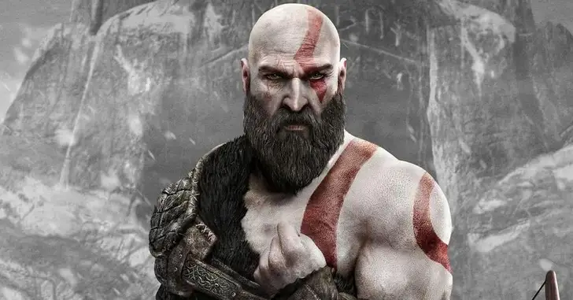

Kratos
Muitos anos após os eventos de God of War III, Kratos, tendo sobrevivido à sua aparente morte ao liberar o poder da Esperança na Grécia, acabou na antiga Escandinávia no reino nórdico de Midgard e teve um filho chamado Atreus, que não tem conhecimento de sua verdadeira natureza. Kratos abandonou sua dupla
lâminas acorrentadas como um simbolismo de abandono de sua antiga persona; em vez disso, ele usa um machado de batalha mágico chamado Leviatã que originalmente pertencia a sua segunda esposa e mãe de Atreus Laufey (chamada Faye por Kratos), que faleceu recentemente. Seu último desejo era que suas cinzas fossem espalhadas no pico mais alto dos nove reinos. No pico de Midgard,
eles aprendem com Mímir que o pico mais alto está na verdade em Jötunheim. Ao longo de sua jornada, eles são confrontados pelo deus Æsir Baldur, o irmão de Thor cujos filhos Modi e Magni ajudam seu tio, mas são mortos por Kratos e Atreus. Nessa época, Atreus adoece. Para curá-lo, Kratos deve recuperar suas armas antigas, as Lâminas do Caos,
para lutar contra os seres de Helheim, pois o Machado Leviatã é inútil lá.

Ao recuperar as lâminas, Athena aparece e o provoca sobre seu passado. Kratos viaja para Hel e recupera a cura matando o troll que guarda o reino. Depois de curá-lo, Kratos revela a Atreus que ele é um deus.
A dupla também recebe assistência de uma bruxa, mais tarde revelou ser a deusa Vanir Freya, a mãe de Baldur que lançou um feitiço de imortalidade em Baldur que o protege, mas também faz com que ele não sinta mais nada fisicamente, o que ele se ressentiu dela. por. Kratos e Baldur eventualmente batalham, durante o qual, o feitiço de Baldur é quebrado.
Kratos decide deixar Baldur ir, mas Baldur tenta matar Freya, forçando Kratos a matá-lo. Freya jura vingança contra Kratos por matar seu filho e provoca Kratos por não revelar seu passado conturbado a Atreus. Kratos decide contar a Atreus que ele havia matado seus companheiros deuses gregos,
incluindo seu pai Zeus (cuja ilusão ele e Atreus viram em Helheim ao lado de uma ilusão de um Kratos mais jovem de God of War III mostrando seu confronto final), mas ele e Atreus devem aprender com essas experiências e não repetir erros do passado. Os dois então seguem para Jötunheim, onde se descobre que Faye era na verdade um gigante,
também tornando Atreus parte-gigante.
Também é revelado que Faye originalmente queria nomear seu filho Loki, mas Kratos preferiu Atreus, que era o nome de um camarada espartano honrado. Os gigantes também se referiam a Kratos como Fárbauti. Em Midgard, começou o Fimbulwinter, e depois de dormir na casa da família,
Atreus tem uma visão de que Thor virá buscá-los no final de Fimbulwinter.